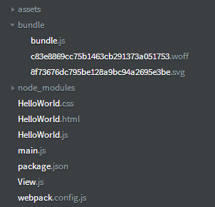
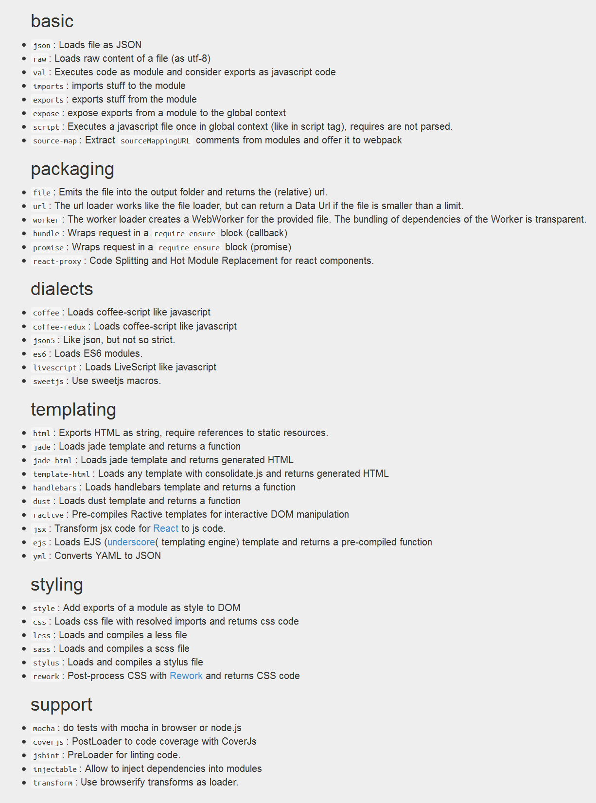
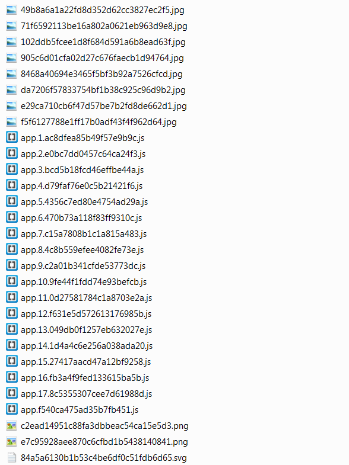

name: cover <img class="peerigon-logo" src="assets/img/peerigon-logo.png"> # Managing your front-end with webpack Johannes Ewald<br> MNUG / July 9th, 2014 --- layout: true class: center, middle .slide-header-left[ Managing your front-end with webpack ] .slide-header-right[ MNUG / July 9th, 2014 ] --- ## About me My name is Johannes Ewald --- <img src="assets/img/peerigon-logo-big.png" width="400" style="position: relative; left: -50px"> --- <img src="assets/img/webpack-logo.png"> [webpack.github.io](http://webpack.github.io/) --- What is a module bundler? --- `a.js` ```javascript var b = require("./b.js"); console.log(b); ``` `b.js` ```javascript module.exports = 42; ``` --- `bundle.js` ```javascript ({ "./a.js": function(module, exports, require) { var b = require("./b.js"); console.log(b); }, "./b.js": function(module, exports, require) { module.exports = 42; }}) ``` --- `bundle.js` can now be executed anywhere. --- ```html <html> <head> <title>Example</title> <script src="/bundle.js" type="application/javascript"></script> </head> <body></body> </html> ``` <img src="assets/img/browser-console.png" style="width: 100%"> --- So how does webpack work? --- Via command line ```bash $ webpack <entry> <output> ``` ```bash $ webpack a.js bundle.js ``` ```bash Hash: a771515e38c2f7407e3b Version: webpack 1.3.1-beta7 Time: 77ms Asset Size Chunks Chunk Names bundle.js 1682 0 [emitted] main [0] ./a.js 45 {0} [built] [1] ./b.js 22 {0} [built] ``` --- Via config ```bash $ webpack --config <path to config> ``` ```javascript module.exports = { entry: path.resolve(__dirname, "./a.js"), output: { path: __dirname, filename: "bundle.js" } }; ``` -- If your config is called `webpack.config.js` you can just run ```bash $ webpack ``` --- `bundle.js` .code[ ```javascript /******/ (function(modules) { // webpackBootstrap /******/ /******/ // The module cache /******/ var installedModules = {}; /******/ /******/ // The require function /******/ function __webpack_require__(moduleId) { /******/ // Check if module is in cache /******/ if(installedModules[moduleId]) /******/ return installedModules[moduleId].exports; /******/ /******/ // Create a new module (and put it into the cache) /******/ var module = installedModules[moduleId] = { /******/ exports: {}, /******/ id: moduleId, /******/ loaded: false /******/ }; /******/ /******/ // Execute the module function /******/ modules[moduleId].call(module.exports, module, module.exports, __webpack_require__); /******/ /******/ // Flag the module as loaded /******/ module.loaded = true; /******/ /******/ // Return the exports of the module /******/ return module.exports; /******/ } /******/ /******/ /******/ // expose the modules object (__webpack_modules__) /******/ __webpack_require__.m = modules; /******/ /******/ // expose the module cache /******/ __webpack_require__.c = installedModules; /******/ /******/ // __webpack_public_path__ /******/ __webpack_require__.p = ""; /******/ /******/ /******/ // Load entry module and return exports /******/ return __webpack_require__(0); /******/ }) /************************************************************************/ /******/ ([ /* 0 */ /***/ function(module, exports, __webpack_require__) { var b = __webpack_require__(1); console.log(b); /***/ }, /* 1 */ /***/ function(module, exports, __webpack_require__) { module.exports = 42; /***/ } /******/ ]) ``` ] --- - A small module system is included at the beginning - Filenames are transformed to ids (in contrast to browserify) --- But what about different module styles? --- CommonJS ```javascript var someModule = require("./someModule.js"); module.exports = 42; ``` AMD ```javascript define(["./someModule.js"] , function (someModule) { return 42; }); ``` ES6 modules <small>(using es6-loader)</small> ```javascript import someModule from "./someModule.js"; export default 42; ``` --- But websites are more than just JavaScript: - HTML - CSS - Fonts - Images --- Wouldn't it be nice if we could all just **require()™** them? --- `HelloWorld.js` ```javascript var HelloWorld = View.extend({ template: require("./HelloWorld.html"), styles: require("./HelloWorld.css") }); ``` --- `HelloWorld.html` ```html <div class="hello-world"> <h1>Hello World</h1> </div> ``` `HelloWorld.css` ```css .hello-world h1 { color: hotpink; } ``` --- But webpack doesn't understand HTML or CSS, it's a module bundler for JavaScript. --- That's were loaders come in... --- ## Loaders > Loaders are transformations that are applied on files. They preprocess files. For instance they can transform CoffeeScript to JavaScript. <cite>[webpack.github.io/docs/loaders.html](http://webpack.github.io/docs/loaders.html)</cite> --- ## raw-loader Turns ... ```html <div class="hello-world"> <h1>Hello World</h1> </div> ``` ... into ... ```javascript module.exports = "<div class=\"hello-world\">\n <h1>Hello world</h1>\n</div>"; ``` --- Or ... ```css .hello-world h1 { color: hotpink; } ``` ... into ... ```javascript module.exports = ".hello-world h1 {\n color: hotpink;\n}"; ``` --- How are loaders applied? --- First of all we need to install the loaders we want to use ```bash $ npm i raw-loader --save ``` --- Inlined ```javascript var HelloWorld = View.extend({ template: require("raw!./HelloWorld.html"), styles: require("raw!./HelloWorld.css") }); ``` <small>(as proposed by CommonJS)</small> --- Via config ```javascript module.exports = { // ... module: { loaders: [ { test: /\.html$|\.css$/i, loader: "raw" } ] } // ... }; ``` -- ```javascript var HelloWorld = View.extend({ template: require("./HelloWorld.html"), styles: require("./HelloWorld.css") }); ``` --- - HTML ✔ - CSS ✔ - Fonts - Images --- CSS provides a syntax for referencing required files: ```css @font-face { font-family: 'Yanone Kaffeesatz'; src: url(assets/fonts/yanonekaffeesatz-regular-webfont.woff) format('opentype'); font-weight: normal; font-style: normal; } ``` ```css @import "reset.css"; ``` --- So does HTML: ```html <img src="assets/img/alamid-logo.svg"> ``` --- Wouldn't it be nice if webpack just understood HTML and CSS? --- ```bash $ npm i html-loader css-loader --save ``` --- ```javascript module.exports = { // ... module: { loaders: [ { test: /\.html$/i, loader: "html" }, { test: /\.css$/i, loader: "css" } ] } // ... }; ``` --- ```bash $ webpack Hash: 1fe807fbecf26b07a8f8 Version: webpack 1.3.1-beta7 Time: 251ms Asset Size Chunks Chunk Names bundle.js 2873 0 [emitted] main [0] ./main.js 46 {0} [optional] [built] [1] ./HelloWorld.js 159 {0} [optional] [built] [2] ./View.js 157 {0} [optional] [built] [3] ./HelloWorld.html 158 {0} [optional] [built] [1 error] [4] ./HelloWorld.css 287 {0} [optional] [built] [1 error] [5] ./assets/img/alamid-logo.svg -1 [optional] [built] [failed] [6] ./assets/fonts/yanonekaffeesatz-regular-webfont.woff -1 [optional] [built] [failed] ERROR in ./assets/img/alamid-logo.svg Module parse failed: /home/jhnns/example/assets/img/alamid-logo.svg Line 1: Unexpected token < You may need an appropriate loader to handle this file type. | <?xml version="1.0" encoding="utf-8"?> | <!-- Generator: Adobe Illustrator 15.1.0, SVG Export Plug-In . SVG Version: 6.00 Build 0) --> | <!DOCTYPE svg PUBLIC "-//W3C//DTD SVG 1.1 Basic//EN" "http://www.w3.org/Graphics/SVG/1.1/DTD/svg11-basic.dtd"> @ ./HelloWorld.html 1:96-135 ERROR in ./assets/fonts/yanonekaffeesatz-regular-webfont.woff Module parse failed: /home/jhnns/example/assets/fonts/yanonekaffeesatz-regular-webfont.woff Line 1: Unexpected token ILLEGAL You may need an appropriate loader to handle this file type. (Source code omitted for this binary file) @ ./HelloWorld.css 2:74-128 ``` --- How to handle assets that don't need to be interpreted further? --- ```bash $ npm i file-loader --save ``` --- ```javascript module.exports = { // ... module: { loaders: [ { test: /\.html$/i, loader: "html" }, { test: /\.css$/i, loader: "css" }, { test: /\.jpe?g$|\.gif$|\.png$|\.svg$|\.woff$|\.ttf$|\.wav$|\.mp3$/, loader: "file" } ] } // ... }; ``` --- ```bash $ webpack Hash: e33cfe8969598388e39c Version: webpack 1.3.1-beta7 Time: 280ms Asset Size Chunks Chunk Names c83e8869cc75b1463cb291373a051753.woff 45752 [emitted] 8f73676dc795be128a9bc94a2695e3be.svg 8707 [emitted] bundle.js 2867 0 [emitted] main [0] ./main.js 46 {0} [optional] [built] [1] ./HelloWorld.js 159 {0} [optional] [built] [2] ./View.js 157 {0} [optional] [built] [3] ./HelloWorld.html 158 {0} [optional] [built] [4] ./HelloWorld.css 296 {0} [optional] [built] [5] ./assets/fonts/yanonekaffeesatz-regular-webfont.woff 82 {0} [optional] [built] [6] ./assets/img/alamid-logo.svg 81 {0} [optional] [built] ``` --- What does the bundle look like now? ---  --- .code[ ```javascript /******/ (function(modules) { // webpackBootstrap /******/ // The module cache /******/ var installedModules = {}; /******/ /******/ // The require function /******/ function __webpack_require__(moduleId) { /******/ /******/ // Check if module is in cache /******/ if(installedModules[moduleId]) /******/ return installedModules[moduleId].exports; /******/ /******/ // Create a new module (and put it into the cache) /******/ var module = installedModules[moduleId] = { /******/ exports: {}, /******/ id: moduleId, /******/ loaded: false /******/ }; /******/ /******/ // Execute the module function /******/ modules[moduleId].call(module.exports, module, module.exports, __webpack_require__); /******/ /******/ // Flag the module as loaded /******/ module.loaded = true; /******/ /******/ // Return the exports of the module /******/ return module.exports; /******/ } /******/ /******/ /******/ // expose the modules object (__webpack_modules__) /******/ __webpack_require__.m = modules; /******/ /******/ // expose the module cache /******/ __webpack_require__.c = installedModules; /******/ /******/ // __webpack_public_path__ /******/ __webpack_require__.p = ""; /******/ /******/ // Load entry module and return exports /******/ return __webpack_require__(0); /******/ }) /************************************************************************/ /******/ ([ /* 0 */ /***/ function(module, exports, __webpack_require__) { var HelloWorld = __webpack_require__(1); /***/ }, /* 1 */ /***/ function(module, exports, __webpack_require__) { var View = __webpack_require__(2); module.exports = View.extend({ template: __webpack_require__(3), styles: __webpack_require__(4) }); /***/ }, /* 2 */ /***/ function(module, exports, __webpack_require__) { module.exports = { extend: function (view) { return function (parent) { parent.innerHTML = view.template; }; } }; /***/ }, /* 3 */ /***/ function(module, exports, __webpack_require__) { module.exports = "<div class=\"hello-world\">\r\n <h1>Hello World</h1>\r\n <img src=\"" + __webpack_require__(6) + "\">\r\n</div>\r\n"; /***/ }, /* 4 */ /***/ function(module, exports, __webpack_require__) { module.exports = "@font-face {\r\n font-family: 'Yanone Kaffeesatz';\r\n src: url("+__webpack_require__(5)+") format('opentype');\r\n font-weight: normal;\r\n font-style: normal;\r\n}\r\n\r\n.hello-world h1 {\r\n color: hotpink;\r\n}\r\n"; /***/ }, /* 5 */ /***/ function(module, exports, __webpack_require__) { module.exports = __webpack_require__.p + "c83e8869cc75b1463cb291373a051753.woff" /***/ }, /* 6 */ /***/ function(module, exports, __webpack_require__) { module.exports = __webpack_require__.p + "8f73676dc795be128a9bc94a2695e3be.svg" /***/ } /******/ ]) ``` ] --- But what if we wanted to use LESS instead of CSS? --- ```css @font-face { font-family: 'Yanone Kaffeesatz'; src: url(assets/fonts/yanonekaffeesatz-regular-webfont.woff) format('opentype'); font-weight: normal; font-style: normal; } @color: hotpink; .hello-world { h1 { color: @color; } } ``` --- ```bash $ npm i less-loader --save ``` -- There's a loader for everything™ --- ```javascript module.exports = { // ... module: { loaders: [ // ... { test: /\.less$/i, loader: "less" }, // ... ] } // ... }; ``` **?** --- ```bash $ webpack Hash: 1bd24bdbc06f3ffd597d Version: webpack 1.3.1-beta7 Time: 209ms Asset Size Chunks Chunk Names 8f73676dc795be128a9bc94a2695e3be.svg 8707 [emitted] bundle.js 2528 0 [emitted] main [0] ./main.js 46 {0} [optional] [built] [1] ./HelloWorld.js 160 {0} [optional] [built] [1 error] [2] ./View.js 157 {0} [optional] [built] [3] ./HelloWorld.less -1 [optional] [built] [failed] [4] ./HelloWorld.html 158 {0} [optional] [built] [5] ./assets/img/alamid-logo.svg 81 {0} [optional] [built] ERROR in ./HelloWorld.less Module parse failed: /home/jhnns/example/HelloWorld.less Line 1: Unexpected token ILLEGAL You may need an appropriate loader to handle this file type. | @font-face { | font-family: 'Yanone Kaffeesatz'; | src: url(assets/fonts/yanonekaffeesatz-regular-webfont.woff) format('opentype'); @ ./HelloWorld.js 5:12-40 ``` --- That's because the LESS-loader generates CSS. -- We need to chain both loaders. --- ```javascript module.exports = { // ... module: { loaders: [ // ... { test: /\.less$/i, loader: "css!less" }, // ... ] } // ... }; ``` or inline ```javascript require("css!less!./HelloWorld.less"); ``` --- And talking about chaining loaders ... ... you should always chain `style!css` --- .code[ ```javascript /******/ (function(modules) { // webpackBootstrap /******/ // The module cache /******/ var installedModules = {}; /******/ /******/ // The require function /******/ function __webpack_require__(moduleId) { /******/ /******/ // Check if module is in cache /******/ if(installedModules[moduleId]) /******/ return installedModules[moduleId].exports; /******/ /******/ // Create a new module (and put it into the cache) /******/ var module = installedModules[moduleId] = { /******/ exports: {}, /******/ id: moduleId, /******/ loaded: false /******/ }; /******/ /******/ // Execute the module function /******/ modules[moduleId].call(module.exports, module, module.exports, __webpack_require__); /******/ /******/ // Flag the module as loaded /******/ module.loaded = true; /******/ /******/ // Return the exports of the module /******/ return module.exports; /******/ } /******/ /******/ /******/ // expose the modules object (__webpack_modules__) /******/ __webpack_require__.m = modules; /******/ /******/ // expose the module cache /******/ __webpack_require__.c = installedModules; /******/ /******/ // __webpack_public_path__ /******/ __webpack_require__.p = ""; /******/ /******/ // Load entry module and return exports /******/ return __webpack_require__(0); /******/ }) /************************************************************************/ /******/ ([ /* 0 */ /***/ function(module, exports, __webpack_require__) { var HelloWorld = __webpack_require__(1); /***/ }, /* 1 */ /***/ function(module, exports, __webpack_require__) { var View = __webpack_require__(2); module.exports = View.extend({ template: __webpack_require__(3), styles: __webpack_require__(4) }); /***/ }, /* 2 */ /***/ function(module, exports, __webpack_require__) { module.exports = { extend: function (view) { return function (parent) { parent.innerHTML = view.template; }; } }; /***/ }, /* 3 */ /***/ function(module, exports, __webpack_require__) { module.exports = "<div class=\"hello-world\">\r\n <h1>Hello World</h1>\r\n <img src=\"" + __webpack_require__(7) + "\">\r\n</div>\r\n"; /***/ }, /* 4 */ /***/ function(module, exports, __webpack_require__) { // style-loader: Adds some css to the DOM by adding a <style> tag var dispose = __webpack_require__(6) // The css code: (__webpack_require__(5)) if(false) { module.hot.accept(); module.hot.dispose(dispose); } /***/ }, /* 5 */ /***/ function(module, exports, __webpack_require__) { module.exports = "@font-face {\n font-family: 'Yanone Kaffeesatz';\n src: url("+__webpack_require__(8)+") format('opentype');\n font-weight: normal;\n font-style: normal;\n}\n.hello-world h1 {\n color: #ff69b4;\n}\n"; /***/ }, /* 6 */ /***/ function(module, exports, __webpack_require__) { /* MIT License http://www.opensource.org/licenses/mit-license.php Author Tobias Koppers @sokra */ module.exports = function addStyle(cssCode) { if(false) { if(typeof document !== "object") throw new Error("The style-loader cannot be used in a non-browser environment"); } var styleElement = document.createElement("style"); styleElement.type = "text/css"; var head = document.getElementsByTagName("head")[0]; head.appendChild(styleElement); if (styleElement.styleSheet) { styleElement.styleSheet.cssText = cssCode; } else { styleElement.appendChild(document.createTextNode(cssCode)); } return function() { head.removeChild(styleElement); }; } /***/ }, /* 7 */ /***/ function(module, exports, __webpack_require__) { module.exports = __webpack_require__.p + "8f73676dc795be128a9bc94a2695e3be.svg" /***/ }, /* 8 */ /***/ function(module, exports, __webpack_require__) { module.exports = __webpack_require__.p + "c83e8869cc75b1463cb291373a051753.woff" /***/ } /******/ ]) ``` ] --- So, writing ```javascript require("style!css!./HelloWorld.css"); ``` attaches the style instantly to the document. --- There's a loader for everything™ .code[  ] --- But what if my codebase has more than 1000 modules? -- The `bundle.js` could easily be > 1MB --- ## Solution Create splitpoints. --- `main.js` ```javascript require.ensure(["./otherPart.js"], function (otherPart) { // now you can use otherPart }); ``` --- <img src="assets/img/ensure-5.png"> --- Calling `require.ensure()` loads the given modules on demand. It splits your codebase into so-called "chunks" --- **Pro-Tip:** Use the bundle- or promise-loader ```javascript require("promise!./otherPart").then(function (otherPart) { }); ``` --- Now we can create intelligent split-points to minimize the entry chunk. --- ## Good news for people how like good news These chunks can be cached aggressivly --- ```javascript module.exports = { // ... output: { filename: "app.[hash].js", chunkFilename: "app.[id].[chunkhash].js" } // ... }; ``` ---  --- We could also cache it using the ApplicationCache. --- ```javascript var AppCachePlugin = require('appcache-webpack-plugin'); module.exports = { // ... plugins: [ new AppCachePlugin() ] // ... }; ``` --- .code[ ```bash CACHE MANIFEST # Wed Jul 09 2014 18:03:06 GMT+0200 (Mitteleuropäische Sommerzeit) CACHE: /statics/54212c3c9f6596bb61b6cdb3d2cd7aef.ttf /statics/4dc78942bd54507d17fe82406efaf4fe.ttf /statics/309d59b8e265b559a9af67113ed5f0c1.ttf /statics/8a80debc1654c689f865cafd82b008c9.ttf /statics/cfa9fc180b6a314c44c924ea64c5ffcd.wav /statics/0aebab1c143aae0b65a3424924bc9720.jpg /statics/20c990685a54e36c93ec8ded3634dfdd.jpg /statics/da7206f57833754bf1b38c925c96d9b2.jpg /statics/24f942a400e87904d784e00abd89ccd7.jpg /statics/e29ca710cb6f47d57be7b2fd8de662d1.jpg /statics/5a8594d710d244f6f61e7c0400fdf6ef.jpg /statics/f5f6127788e1ff17b0adf43f4f962d64.jpg /statics/71f6592113be16a802a0621eb963d9e8.jpg /statics/49b8a6a1a22fd8d352d62cc3827ec2f5.jpg /statics/1e58ef1491651c6b4163df6ba21f959e.jpg /statics/04a5e2da066c22778bf39ad7d0ed0e51.jpg /statics/905c6d01cfa02d27c676faecb1d94764.jpg /statics/0e19233828a0681d31bbdd1f979c94d6.jpg /statics/8468a40694e3465f5bf3b92a7526cfcd.jpg /statics/c2ead14951c88fa3dbbeac54ca15e5d3.png /statics/e7c95928aee870c6cfbd1b5438140841.png /statics/7a30f86b4225c6f535d58b918c9d355e.jpg /statics/102ddb5fcee1d8f684d591a6b8ead63f.jpg /statics/84a5a6130b1b53c4be6df0c51fdb6d65.svg /statics/app.f540ca475ad35b7fb451.js /statics/app.1.ac8dfea85b49f57e9b9c.js /statics/app.2.e0bc7dd0457c64ca24f3.js /statics/app.3.bcd5b18fcd46effbe44a.js /statics/app.4.d79faf76e0c5b21421f6.js /statics/app.5.4356c7ed80e4754ad29a.js /statics/app.6.470b73a118f83ff9310c.js /statics/app.7.c15a7808b1c1a815a483.js /statics/app.8.4c8b559efee4082fe73e.js /statics/app.9.c2a01b341cfde53773dc.js /statics/app.10.9fe44f1fdd74e93befcb.js /statics/app.11.0d27581784c1a8703e2a.js /statics/app.12.f631e5d572613176985b.js /statics/app.13.049db0f1257eb632027e.js /statics/app.14.1d4a4c6e256a038ada20.js /statics/app.15.27417aacd47a12bf9258.js /statics/app.16.fb3a4f9fed133615ba5b.js /statics/app.17.8c5355307cee7d61988d.js NETWORK: * http://* https://* ``` ] --- There are also plenty of other useful features and plugins: - webpack-dev-server for development - SourceMaps support - CommonChunkPlugin --- - DedupePlugin for reducing duplicate modules - ComponentPlugin for using component.io - I18nPlugin - HotModuleReplacementPlugin --- There is a webpack integration for common build tools like - Grunt - Gulp --- Who is using webpack? - Instagram - Süddeutsche Zeitung --- The docs on [webpack.github.io](http://webpack.github.io) are still work in progress ... --- ... but you can get fast support in webpack's gitter chat on [gitter.im/webpack/webpack](https://gitter.im/webpack/webpack) --- Thank you for listening. --- Contact me on GitHub [github.com/jhnns](https://github.com/jhnns/) on Twitter [@jhnnns](https://twitter.com/jhnnns)